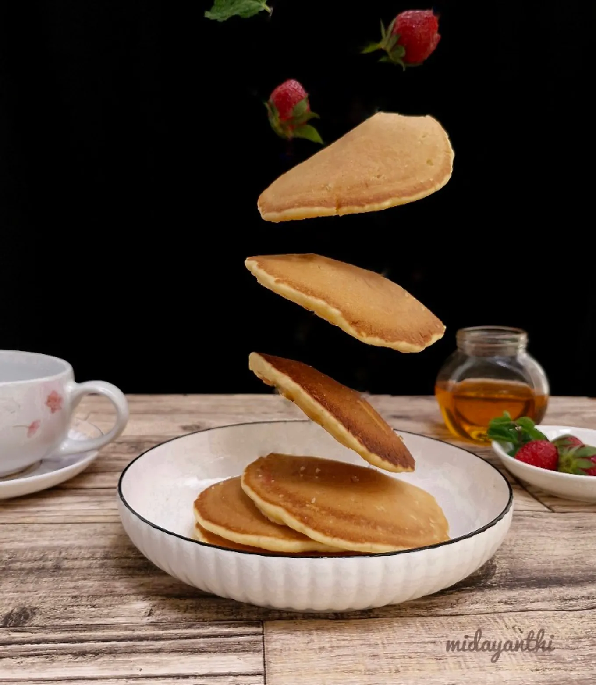

Fluffy Pancakes

Soft and easy-to-make pancakes!
Ingredients
- 130 g all-purpose flour
- 1/4 tsp vanilla powder
- 1/2 tsp double-acting baking powder
- 1/4 tsp baking soda
- 1/8 tsp salt
- 2 tbsp granulated sugar
- 1 egg
- 2 tbsp margarine, melted
- 2 tbsp lemon/lime juice
- 150 ml milk
- Strawberry jam, honey, or other toppings as needed
Directions
- Prepare the buttermilk: combine the milk and lemon juice, stir well, and let it sit for 10 minutes. Melt the margarine.
- Combine the dry ingredients: flour, baking powder, baking soda, vanilla, salt, and sugar. Mix well, then add the lightly beaten egg.
- Add the melted margarine and stir until well combined and there are no lumps.
- Heat a non-stick pan. Pour in one ladleful of batter and let it cook until bubbles appear, then flip. Cook until golden brown, then remove from the pan. Repeat until all the batter is used.
- Serve with honey, strawberry jam, or any other toppings of your choice.
Home